회의를 통한 역할과 일정 조율
팀장으로서 회의 진행, 역할과 일정 관리를 맡았습니다. 각 기능의 진행 상황과 연결에 필요한 부분을 확인하고, 좀비 생성과 아이템 생성 등 팀원이 구현한 함수의 사용 방식을 공유받아 게임 진행에 붙였습니다.
각자의 기능을,
하나의 게임 흐름으로.
세 지역의 감염체를 파괴하고 기지를 지키는 FPS입니다. 게임 진행과 기능 통합을 맡았고, Animator와 사망 연출은 팀원이 바로 쓸 수 있는 컴포넌트로 만들었습니다.
팀장 / 역할과 일정 관리 / 게임 흐름과 기능 통합 / 아군 AI / Animator와 사망 효과 / 그래픽 설정과 Occlusion Culling
역할과 일정 관리, 회의 진행을 맡았습니다. 팀원과 함수 및 컴포넌트의 호출 방식을 미리 맞춰 각자 만든 기능을 한 게임으로 합쳤습니다.
일정과 구현 난도를 함께 확인하고, 팀원이 완성할 수 있는 범위로 기능을 조정했습니다.
팀장으로서 회의 진행, 역할과 일정 관리를 맡았습니다. 각 기능의 진행 상황과 연결에 필요한 부분을 확인하고, 좀비 생성과 아이템 생성 등 팀원이 구현한 함수의 사용 방식을 공유받아 게임 진행에 붙였습니다.
특수 좀비 구현에 어려움을 겪는 팀원과 논의해 해당 기능을 제외하고 이동 경로와 역할을 조정했습니다. 필요한 기능을 함께 정리해 게임을 처음부터 끝까지 플레이할 수 있게 만들었습니다.
좀비 Animator와 디졸브는 컴포넌트로 제공하고, 1인칭 무기 애니메이션도 담당 팀원과 파라미터, 호출 방식을 미리 맞췄습니다. 각자 만든 기능을 바로 결합할 수 있도록 연결 규칙을 먼저 공유했습니다.
팀원이 만든 감염체와 스포너를 연결해 세 지역의 목표와 보스전까지 이어지는 진행을 만들었습니다.
농장, 마을, 공장의 감염체 파괴 상태를 따로 관리했습니다. 지역 목표 완료 → 일반 좀비 생성 중단 → 보스 등장 대기로 연결하고, 밤이 되면 완료 순서대로 보스를 생성했습니다.
생성 여부를 기록해 중복 등장을 막고 세 번째 보스 등장 시 일반 좀비 생성을 다시 활성화했습니다. 팀원의 스포너와 초기화 함수에 지역 및 경로를 전달하고, 기지의 적 수에 따른 패배 처리까지 연결했습니다.
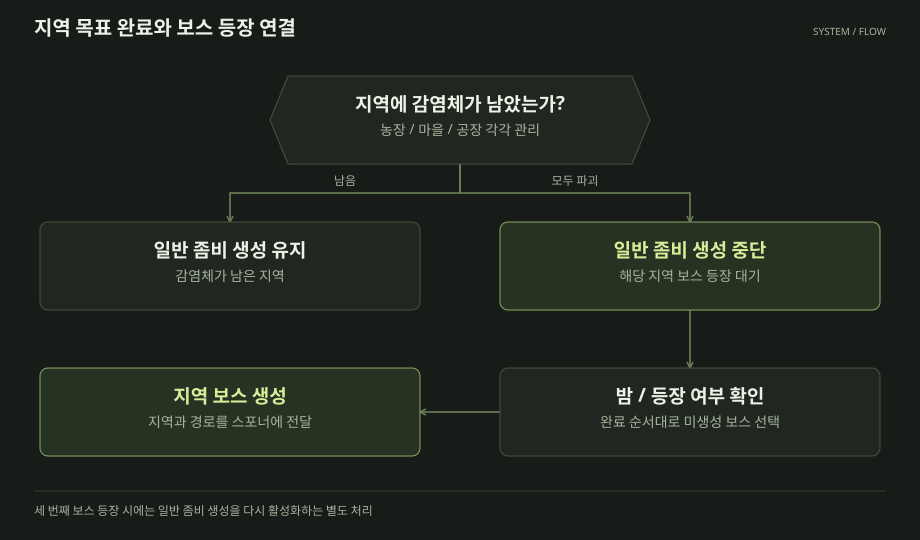
크게 보기 ↗농장의 파괴 수가 전체 감염체 수와 같아지면 해당 지역의 스포너를 멈추고, SetBoss()에 완료 지역을 기록합니다. 마을과 공장도 같은 구조로 처리합니다.
if (curFarmCellCount == farmCellCount)
{
Spawner[] farmSpawnerList = farmSpawners.GetComponentsInChildren<Spawner>();
foreach(Spawner spawner in farmSpawnerList)
spawner.SetSpawn(false);
SetBoss(area);
}CheckBoss()에서는 등장 대기 여부와 생성 여부를 함께 검사합니다. 먼저 생성 플래그를 기록한 뒤 같은 지역 정보로 컷씬과 첫 보스 생성을 호출합니다.
if (_boss1 && !_boss1Spawned)
{
_boss1Spawned = true;
cutSceneManager.PlayBossSpawn(1, _boss1Point);
bossSpawner.SpawnBoss(1, _boss1Point);
}GameManager가 정한 순서와 완료 지역을 받아, 지역에 맞는 생성 위치와 이동 경로로 보스를 활성화하고 초기화합니다.
public void SpawnBoss(int bossNum, GameManager.Areas area)
{
Enemy enemy;
Transform bossPoint = GetSpawnPoint(area);
List<GameObject> waypoints = GetWaypoints(area);
switch (bossNum)
{
case 1:
boss1.transform.position = bossPoint.position;
boss1.SetActive(true);
enemy = boss1.GetComponent<Boss1>();
break;
case 2:
boss2.transform.position = bossPoint.position;
boss2.SetActive(true);
enemy = boss2.GetComponent<Boss2>();
break;
case 3:
boss3.transform.position = bossPoint.position;
boss3.SetActive(true);
enemy = boss3.GetComponent<Boss3>();
break;
default:
return;
}
if (enemy) enemy.Init(wayPoint, waypoints);
}기지에 머물며 적을 공격하고 플레이어의 무기 강화와 함께 성장하도록 연결했습니다.
싱글플레이 전환 후 플레이어가 탐색과 기지 방어를 모두 맡아야 하는 상황을 보완했습니다. 아군은 기지에 머물도록 하고, 플레이어 담당 팀원과 상의해 총기 코드에서 필요한 부분을 재사용했습니다.
PlayerAI.cs에서 표적 관리와 회전, 사격과 재장전을 나눠 처리했습니다. 감지 범위의 적 목록에서 사망과 비활성 대상을 제거하고 첫 번째 유효 대상을 선택합니다. 사격 코루틴은 재장전 여부를 확인한 뒤 높이를 보정한 표적 위치를 IShooter에 전달합니다.
바라보는 방향과 사격 방향이 달랐던 문제는 루트를 적의 수평 방향으로 회전시키고, LateUpdate()에서 애니메이션 적용 후 모델의 로컬 Y 회전을 보정해 해결했습니다.
SetGrade()는 현재보다 높은 무기 등급을 받으면 스탯 테이블을 조회합니다. 플레이어의 무기 강화가 아군의 공격력, 탄창, 공격 간격에도 반영되도록 연결했습니다.
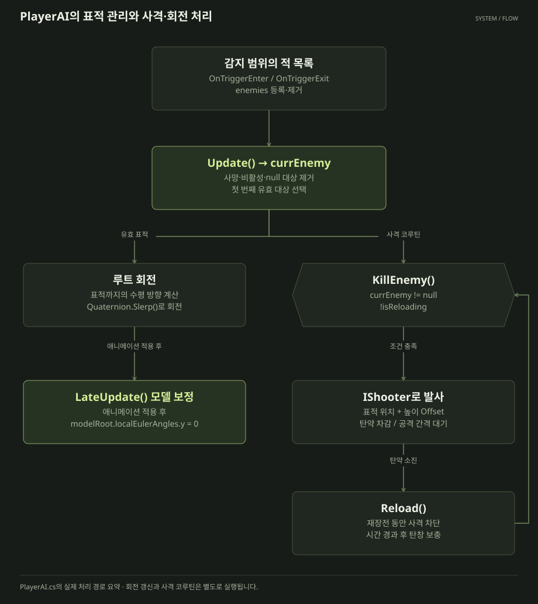
크게 보기 ↗회전 보정: 루트는 적의 수평 방향을 향하고, LateUpdate()에서 모델의 로컬 Y 회전을 정리합니다.
Vector3 dir = currEnemy.transform.position - transform.position;
dir.y = 0f;
Quaternion lookRot = Quaternion.LookRotation(dir);
transform.rotation = Quaternion.Slerp(
transform.rotation,
lookRot,
rotateSpeed * Time.deltaTime
);
// … 함수 사이 생략 …
void LateUpdate()
{
if (modelRoot == null) return;
Vector3 euler = modelRoot.localEulerAngles;
euler.y = 0f;
modelRoot.localEulerAngles = euler;
}사격과 재장전: 적 종류에 따라 구한 currOffset을 표적 높이에 더해 발사하고, 강화된 공격 간격과 남은 탄약을 반영합니다.
target = new Vector3(target.x, target.y + currOffset, target.z);
var bullet = shooter.ImmediateShootProjectile(target);
curAmmo -= 1;
audioSource.PlayOneShot(shootSound);
fireEffect.PlayEffect();
yield return new WaitForSeconds(weaponConfig.FireInterval - BonusFireInterval);
if (curAmmo <= 0 && !isReloading) StartCoroutine(Reload());팀원이 행동 코드와 사망 처리에서 바로 호출할 수 있는 컴포넌트를 만들었습니다.
추상 클래스 ZombieAnimator에 행동별 virtual 함수를 두고, NormalZombieAnimator와 Boss1Animator, Boss2Animator 등에서 필요한 동작을 재정의했습니다. 적 AI 담당자는 같은 인터페이스로 호출하고, 각 컴포넌트가 해당 모델의 Animator 파라미터를 연결하도록 했습니다.
일부 보스는 자동 생성한 레그돌의 허벅지 충돌과 관절 연결이 맞지 않았습니다. 일반 좀비 구성을 참고해 보스 체형에 맞게 Collider와 Joint를 재설정하고 RagdollMaster.cs로 물리 전환을 연결했습니다.
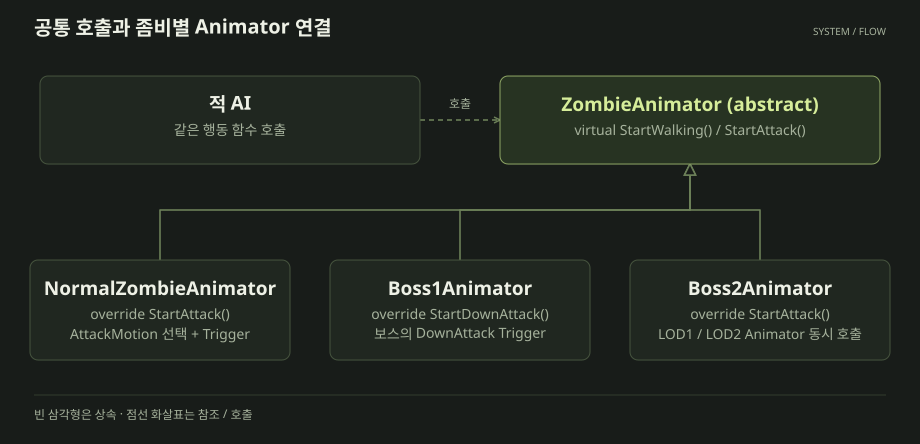
크게 보기 ↗공통 행동은 virtual 함수로 노출해 좀비 종류에 맞는 구현을 재정의할 수 있게 했습니다.
public abstract class ZombieAnimator : MonoBehaviour
{
// Run 애니메이션 보유 여부
public virtual bool HasRunAnimation => false;
// 기본 이동 상태 (모든 좀비 공통)
public virtual void StartIdle() {} // 대부분 존재
public virtual void StartWalking() {} // Normal/Runaway/Spit/Boss etc
public virtual void StartRunning() {} // 일부 일반 좀비는 없음, NO-OP 허용
// 기본 공격 (모든 좀비 공통)
public virtual void StartAttack() {} // 모든 좀비는 Attack 1개 이상 존재Boss2Animator는 같은 StartAttack() 호출로 두 LOD Animator에 공격 Trigger를 전달합니다.
public override void StartAttack()
{
animatorLOD1.SetTrigger(triggers[0]);
animatorLOD2.SetTrigger(triggers[0]);
}사망 시 Animator를 끄고 하위 Rigidbody와 Collider를 물리 상태로 전환합니다. 원래 몸체와 공격 판정 Collider는 꺼서 레그돌과 충돌하지 않게 했습니다.
public void SetRagdollState(bool b)
{
animator.enabled = !b;
Rigidbody[] rigidbodies = GetComponentsInChildren<Rigidbody>();
Collider[] colliders = GetComponentsInChildren<Collider>();
foreach(Rigidbody rigidbody in rigidbodies)
{
rigidbody.isKinematic = !b;
}
foreach(Collider collider in colliders)
{
collider.enabled = b;
}
originalBody.isKinematic = b;
foreach (Collider collider in originalCollider)
collider.enabled = !b;
foreach (Collider collider in attackCollider)
collider.enabled = false;
}Shader Graph로 디졸브를 만들었지만 모든 Material을 교체하면 일부 좀비의 전용 Material이 표현하던 외형을 유지하기 어려웠습니다. 효과를 적용하면서 플레이 중 품질도 유지할 방법이 필요했습니다.
살아 있을 때는 원래 Material을 사용하고 사망 후 사라지는 순간에만 디졸브용 Material로 교체하도록 바꿨습니다. DissolveOnDeath.cs에서 슬롯별 교체 대상을 지정하고, 지정하지 않은 슬롯은 유지합니다. 같은 템플릿을 쓰는 슬롯은 Material Instance를 공유했습니다.
팀원과 호출 방식을 맞춰 레그돌 → 일정 시간 후 디졸브 → 풀 반환으로 연결했습니다. 물리 전환과 사라지는 효과를 컴포넌트로 제공해 팀원의 사망 처리에 바로 결합할 수 있게 했습니다.
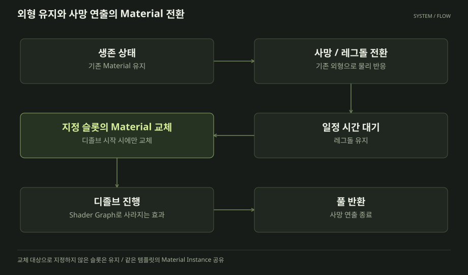
크게 보기 ↗동일한 템플릿을 쓰는 슬롯은 이 좀비 안에서 Material Instance 하나를 공유합니다. 템플릿이 없는 슬롯은 원래 Material을 유지합니다.
if (!templateToInstance.TryGetValue(template, out var inst))
{
inst = new Material(template); // ← 이 좀비용 인스턴스 1개 생성
templateToInstance[template] = inst;
if (inst.HasProperty(DISSOLVE_AMOUNT))
inst.SetFloat(DISSOLVE_AMOUNT, 0f);
runtimeDissolveMats.Add(inst);
}
newMats[i] = inst;외부에서 받은 1인칭 애니메이션마다 팔 모델이 달라 플레이어 캐릭터의 외형과 맞지 않았습니다. 필요한 동작을 활용하면서 팔의 외형을 통일하는 작업이 필요했습니다.
Blender에 플레이어의 팔 모델과 1인칭 애니메이션을 함께 가져와 기존 애니메이션의 팔을 플레이어 모델로 교체한 뒤 Unity에 적용했습니다. 제공된 애니메이션에 팔 모델을 맞추면서 Blender를 익혔습니다.
플레이어 담당 팀원과 장착, 발사, 재장전의 파라미터와 호출 방식을 미리 합의했습니다. 이후 Animator와 WeaponAnimator.cs를 구성해 팀원의 플레이어 코드에서 바로 연결하도록 제공했습니다.
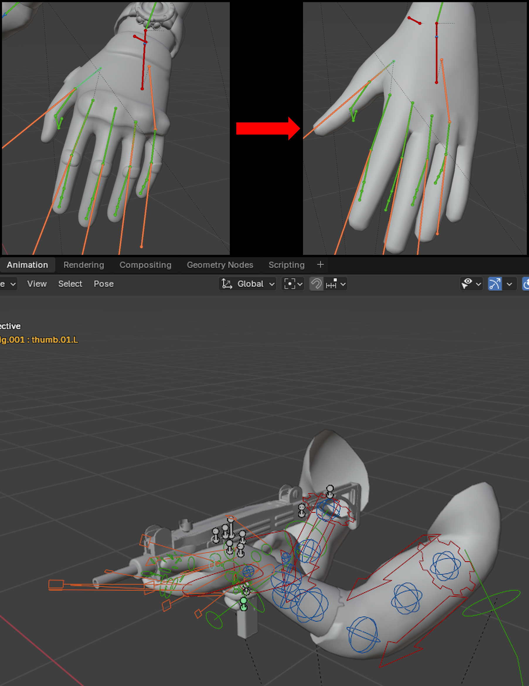
크게 보기 ↗미리 합의한 Animator 파라미터를 해시로 보관하고, 팀원의 플레이어 코드가 TriggerAnimate()와 SetReloadSpeed()로 동작과 재장전 속도를 전달하도록 연결했습니다.
public static readonly int unequipID = Animator.StringToHash("Unequip");
public static readonly int equipID = Animator.StringToHash("Equip");
public static readonly int fireID = Animator.StringToHash("Fire");
public static readonly int reloadID = Animator.StringToHash("Reload");
public static readonly int insertID = Animator.StringToHash("Insert");
public static readonly int reloadEndID = Animator.StringToHash("ReloadEnd");
public static readonly int reloadSpeedID = Animator.StringToHash("ReloadSpeed");
public void StartUnequip() { animator.SetTrigger(triggers[1]); }
public void StartReload() { animator.SetTrigger(triggers[3]); }
public void TriggerAnimate(int ID) { animator.SetTrigger(ID); }
public void SetReloadSpeed(float amount) {animator.SetFloat(reloadSpeedID, amount);}시작과 보스 등장, 승리와 패배에서 필요한 게임 상태 전환을 연결했습니다.
PlayableDirector로 컷씬을 재생하며 게임 시간과 강화 UI를 제어했습니다. 시작과 보스 컷씬은 플레이 복귀, 승리와 패배 컷씬은 결과 화면으로 이어지도록 종료 처리를 구분했습니다.
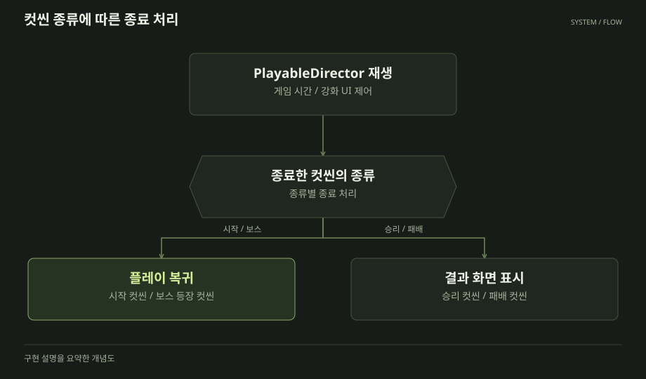
크게 보기 ↗TimeFreeze()는 컷씬 종료 후 복귀 방식에 따라 분기합니다. 시작 컷씬은 시간과 UI를 복구하고, 승패 컷씬은 마지막 화면에서 멈춘 뒤 결과 패널과 커서를 표시합니다.
if (b)
{
Time.timeScale = 1f;
if (playableDirector)
playableDirector.gameObject.SetActive(false);
// 컷씬 끝나면 다시 UI작동
if (UIController.Instance != null)
{
UIController.Instance.PopBlock();
}
if (playableDirector == start) tutorial.StartTultip();
}
else if (!b)
{
playableDirector.time = stopTime;
playableDirector.Evaluate();
playableDirector.Pause();
Cursor.visible = true;
Cursor.lockState = CursorLockMode.None;
if (playableDirector == win) WinPanel.SetActive(true);
else if (playableDirector == lose) LosePanel.SetActive(true);
}그래픽 옵션과 렌더링 최적화를 적용하고, 설정 화면에서 번역 문구가 늦게 바뀌던 문제를 고쳤습니다.
해상도, 화면 모드, 프레임 제한, 그래픽 품질을 설정하고 저장하도록 구성했습니다. 품질 단계 전환과 함께 Terrain의 풀 밀도 등 환경 표현도 조정했습니다.
별도로 Occlusion Culling을 적용해 다른 물체에 가려진 영역의 불필요한 렌더링을 줄였습니다. 노트북 환경에서 Occlusion Culling 적용만으로 최고 프레임이 18 FPS 증가했습니다. 같은 장면의 Stats 기준으로 프레임 시간은 39.6ms → 23.3ms, Batches는 3706 → 3103, Tris는 8.3M → 7.6M으로 줄었습니다.
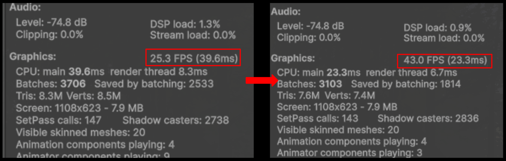
크게 보기 ↗프레임 제한과 그래픽 옵션을 적용하면서 선택값을 PlayerPrefs에 저장합니다. SetGraphic()에서 호출하는 ChangeQuality()는 설정 문자열에 맞춰 QualitySettings의 품질 단계를 변경합니다.
public void SetHz(int hz)
{
Application.targetFrameRate = hz;
PlayerPrefs.SetInt("Hz", hz);
}
public void SetGraphic(string graphic)
{
PlayerPrefs.SetString("Graphic", graphic);
ChangeQuality(graphic);
}영어 설정에서도 UI를 열면 한국어가 잠깐 보였다가 영어로 바뀌는 문제가 있었습니다. UI가 열린 뒤에 Localize String Event가 문구를 갱신해, 그 사이에 기본 한국어 문구가 보였기 때문입니다. 코드와 연결된 문구는 Unity Localization의 문자열 테이블(String Table)을 직접 조회해 표시하도록 변경했습니다.
수정 범위를 고려해 설정값과 무기 선택 문구부터 적용했습니다. 화면 초기화와 언어 변경, 개별 옵션 변경 시 현재 설정에 맞는 번역 문구를 갱신하도록 연결했습니다.
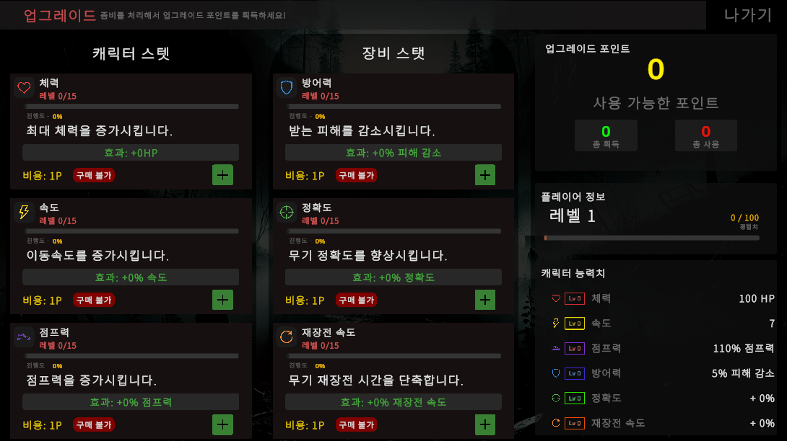
크게 보기 ↗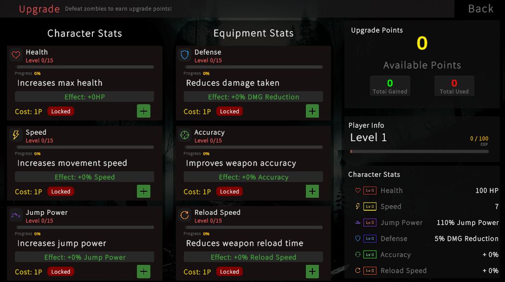
크게 보기 ↗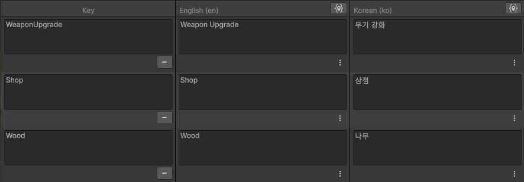
크게 보기 ↗초기화와 언어 변경 시 UpdateTexts()로 문구를 갱신합니다. 화면 모드는 Options 테이블과 현재 선택값의 Key를 StringDatabase.GetLocalizedString()에 전달해 번역 문자열을 가져옵니다.
private void UpdateTexts()
{
UpdateScreenModeText();
UpdateHzText();
UpdateGraphicText();
}
private void UpdateScreenModeText()
{
string key = screenModeKeys[indexScreenMode];
screenModeText.text = LocalizationSettings.StringDatabase
.GetLocalizedString(UI_TABLE, key);
}게임에 필요한 감염체와 아이템의 외형을 준비하는 데 AI 도구를 활용했습니다.
Meshy AI로 세포(감염체)와 드롭 아이템의 3D 에셋을 생성해 게임에 사용했습니다.
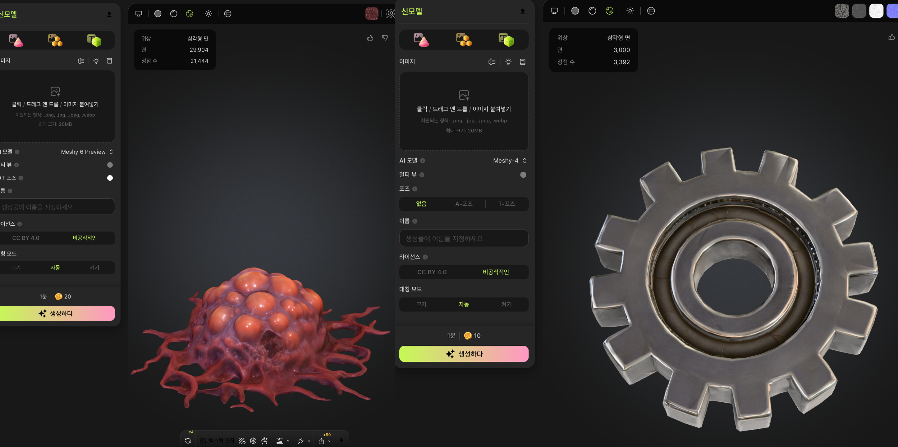
크게 보기 ↗